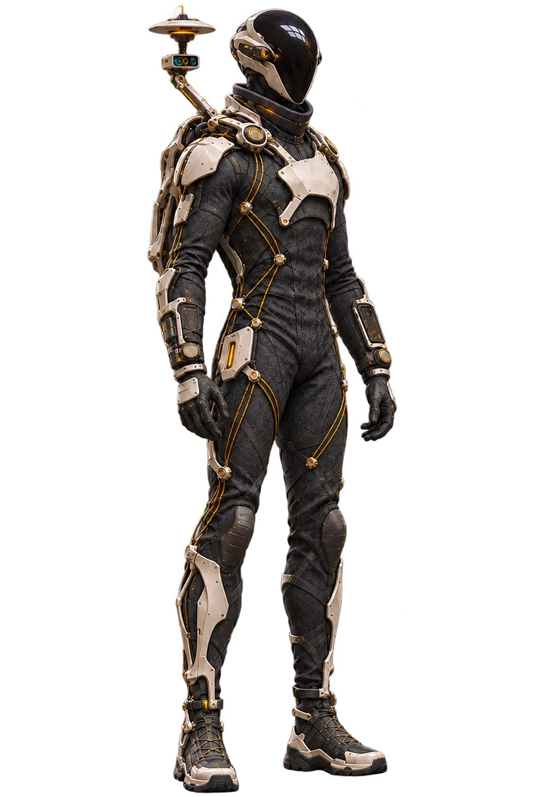

Enhanced
Technology that extends what a person can sense, decide and do, instead of doing it for them.

3ROEnhanced Robotic Organism Join the waitlist3RO · spoken Hero · Founding waitlist open
A hands-on path into human augmentation. Learn the biology and the engineering behind it, then build your first wearable robot: Parrot, an AI companion that rides on your shoulder.

What 3RO stands for
Technology that extends what a person can sense, decide and do, instead of doing it for them.
Machines you wear and work with, at body scale. Not watched on a screen: carried, on you, all day.
Person and machine designed as one system, where the human stays in charge and the robot earns its place.
Ero means “I was” in Italian. 3RO is about what you become next.
The augmentation spectrum
Recover a capability that was lost or reduced. Assistive technology, done with the person at the centre.
Strengthen what you already have: attention, memory, situational awareness, a second pair of eyes over your shoulder.
Add senses you were never born with. Thermal sight, range sensing, a companion that notices what you miss.
The first course · Beyond Baseline
A beginner pathway that connects how the body works with how wearable machines are built. Every module ends in something you can run, test and keep, and every capability you learn goes straight into your own robot.
Human signals, perception and interfaces. Pick a real task the robot should help you with.
Power, sampling, vision, sound, thermal and motion sensing. Bring the first shoulder node to life.
CAD, 3D printing and mounts: the raised shoulder robot and the wrist holder for your phone.
AI conversation, speech, supervised motion, mass, heat and power, until it is safe to wear.
Demonstrate the finished pair on a real everyday task, with the evidence to back it.
Everything you'll learn
Biology, electronics, software, mechanics and systems thinking, woven together in the order you need them. Tap a discipline to see where it runs through the course.
A00Mission, measurement and your first evidenceA01Numbers, Python and uncertainty for augmentationA02Cells, tissues, anatomy and homeostasisA03Nervous systems, sensory coding and perceptionA04Muscle, motor control and proprioceptionA05Biomechanics, movement and load pathsA06Skin, tissue interfaces and human factorsA07Low-voltage electronics and bench measurementA08Python acquisition, timestamps and debuggingA09Signals, calibration and uncertaintyA10Visual biology, cameras and perceptionA11Low-light and thermal perceptionA12Hearing, acoustics and audio sensingA13Haptics and information interfacesA14Biosignals and biological measurement evidenceA15Inertial sensing and orientationA16Wearability, CAD and power packagingA17Multi-sensor communication and integrationA18Physical-assistance models and bench controlA19Protection, mobility and specialist collaborationA20Experiments, human responses and reliabilityA21Personal augmentation and shared guidesA22Integration validation and field protocolsA23Foundation capstone: the perception pipelineA24Mathematical bridge for integrated systemsA25Parrot requirements and companion architectureA26Parametric CAD, assemblies and technical drawingsA27Beginner 3D printing, slicing and inspectionA28Joined modular parts, fasteners and fitA29Build the shoulder assistant architectureA30Intelligence, voice and grounded contextA31Embedded timing buses and watchdogsA32State estimation, stability and bounded controlA33Human adaptation, thermoregulation and workloadA34Structural mechanics, dynamics and model credibilityA35Materials, fatigue, fabrication and inspectionA36Actuation, compliance and deployable mechanismsA37Work, power and mission energy closureA38Electrical distribution, conversion and battery managementA39Heat transfer and coupled thermal environmentsA40Wireless links, body placement and Android lifecycleA41Phone-wrist controls and assistant interactionA42Camera directions and local companion lookingA43Shoulder speech and portable companion operationA44Reliability and authority in a moving companionA45Metrology, fit acceptance and independent observationsA46Integrate PARROT time, heat and operating resourcesA47Demonstrate and hand over your ParrotMeet Parrot
Parrot is a small robot that rides on your shoulder, looks around, notices things and talks with you. Your phone, worn on the wrist, is its controller. You build every part of it during the course.
Biology, sensing, control and fabrication, explained from zero with live experiments.
Each module adds a real capability to the same robot. No toy projects, no starting over.
Finish with a working companion and the judgement to design your next augmentation.
Founding members
The first cohort opens to the waitlist before anyone else. Founding members get:
Questions
No. The course is a beginner pathway: it starts from measurement and the human body and builds up. It does ask for curiosity and steady weekly effort: it is a serious programme, not a weekend kit.
Pricing will be announced to the waitlist first, with a founding-member rate for the first cohort. Parrot's hardware is bought separately from off-the-shelf parts, and the course includes a full parts list and ordering guide.
A computer to start. Later modules use an Android phone as the wrist controller, a 3D printer (or a printing service) and basic electronics tools. Each one is introduced when it's needed, not all on day one.
Safety is built into the design. Everything is non-invasive and built on the bench first. Movement is controlled locally with hard limits and a stop, and nothing makes medical or protective claims.
3RO is founded by Alessio Garofalo: former Italian Army signal officer, Amazon technology leader across Europe and Asia-Pacific, CIO/CTO at NEOM Oxagon and Chief Transformation Officer at NATO, and author of CTO by Mistake. 3RO is where that path goes next.